Galeri Kegiatan
Dokumentasi praktik dan kegiatan selama kuliah.


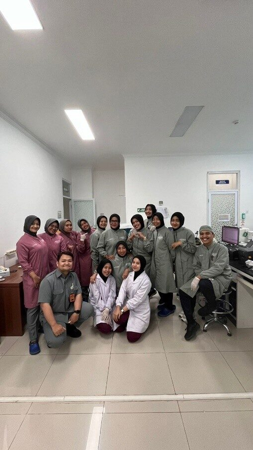
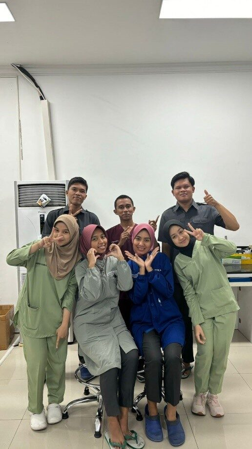


Lulusan D4 Teknologi Laboratorium Medis dengan predikat Cum Laude. Berpengalaman praktik di laboratorium klinik rumah sakit dan siap menghasilkan pemeriksaan yang akurat untuk pelayanan pasien yang lebih baik.
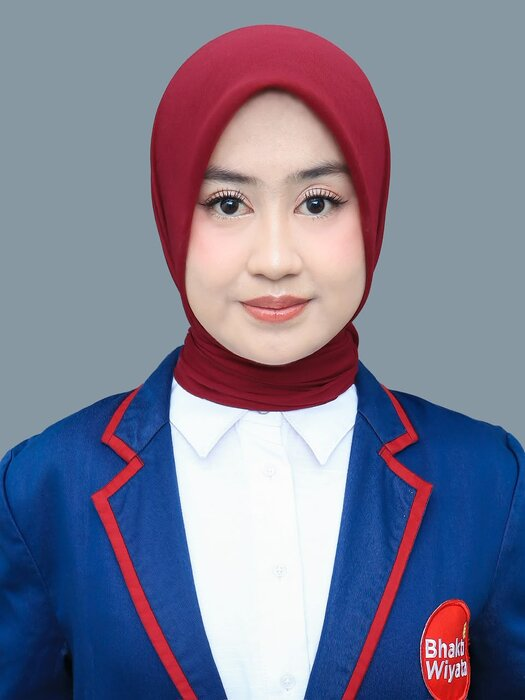
Ringkasan singkat latar belakang dan tujuan karier.
Saya lulusan D4 Teknologi Laboratorium Medis, Institut Ilmu Kesehatan Bhakti Wiyata Kediri (2022 sampai 2026) dengan predikat Cum Laude dan IPK 3,74. Saya telah lulus Uji Kompetensi dan dinyatakan kompeten sebagai Tenaga Teknologi Laboratorium Medik Level 6.
Selama Praktik Kerja Lapangan di RSUD Dr. Iskak Tulungagung dan Praktik Belajar Lapangan di RS Bhayangkara Kediri, saya terbiasa bekerja di alur pra-analitik, analitik, dan pasca-analitik, mulai dari flebotomi hingga pencatatan hasil.
Saya pribadi yang teliti, bertanggung jawab, dan senang bekerja dalam tim. Saya siap berkontribusi di rumah sakit, laboratorium klinik, maupun industri kesehatan.
Praktik klinik di laboratorium rumah sakit selama kuliah.
Kompetensi teknis laboratorium dan kemampuan pendukung.
Nilai skripsi: A.
Penelitian kuantitatif observasional analitik dengan rancangan cross sectional untuk melihat apakah penanda inflamasi CRP berhubungan dengan kadar asam urat pada pasien DM tipe 2.
Hasil uji korelasi Spearman menunjukkan koefisien 0,090 dengan nilai signifikansi 0,635 (> 0,05), sehingga tidak terdapat hubungan yang signifikan antara kadar CRP dan kadar asam urat pada sampel penelitian.
Klik sertifikat untuk melihat ukuran penuh.
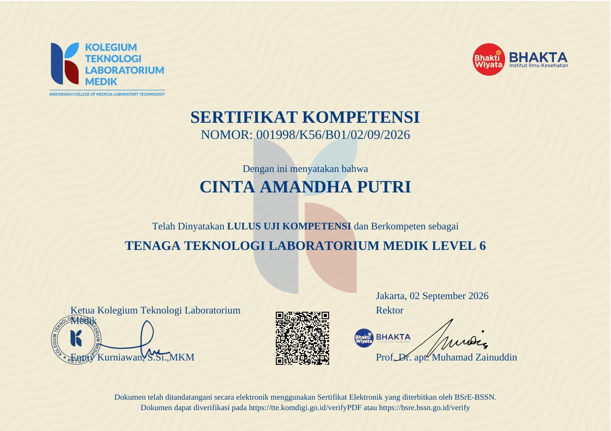
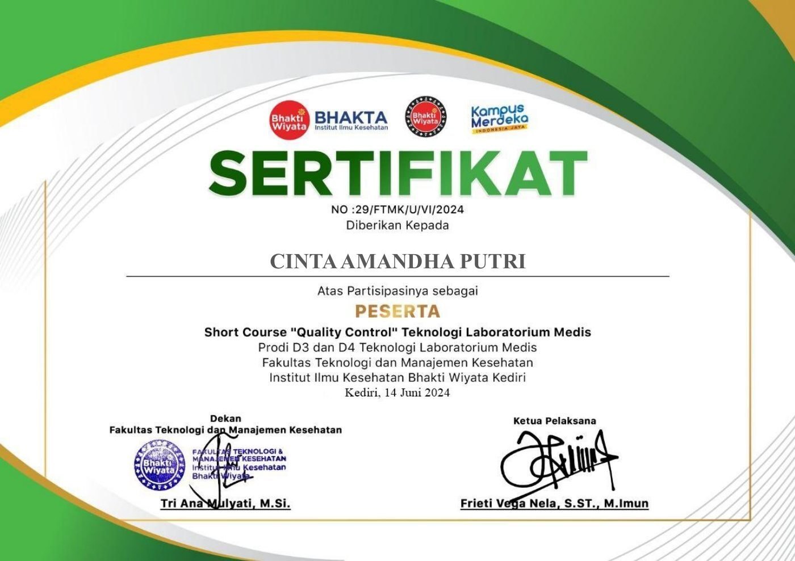
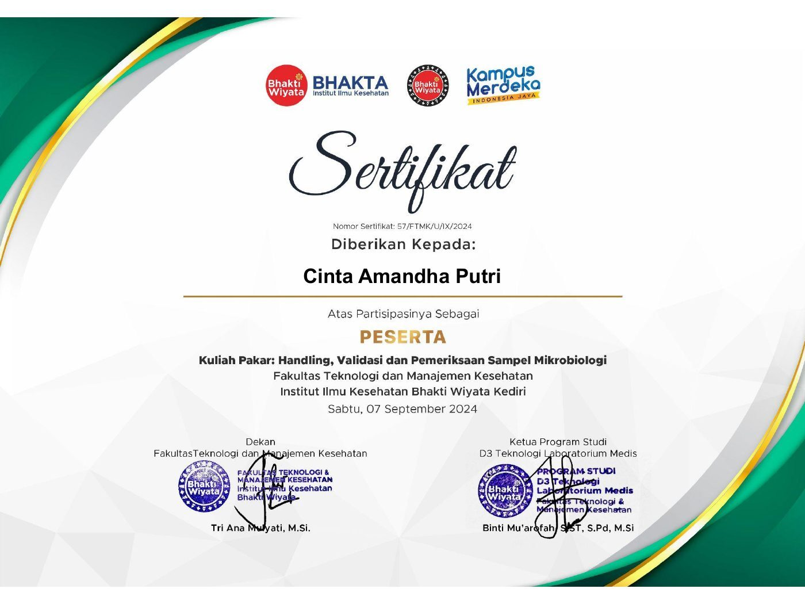
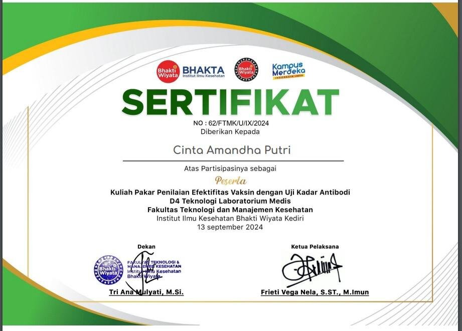
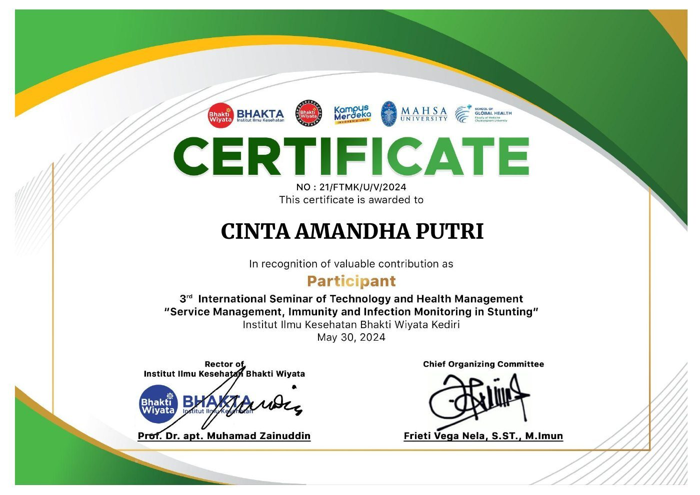
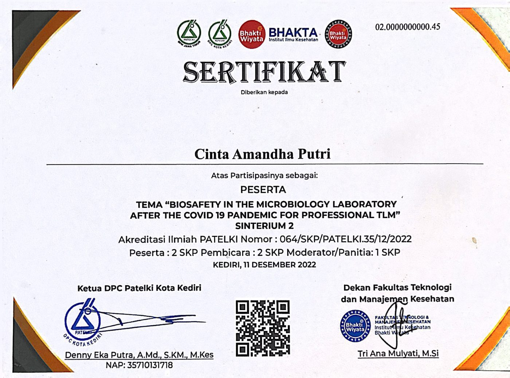
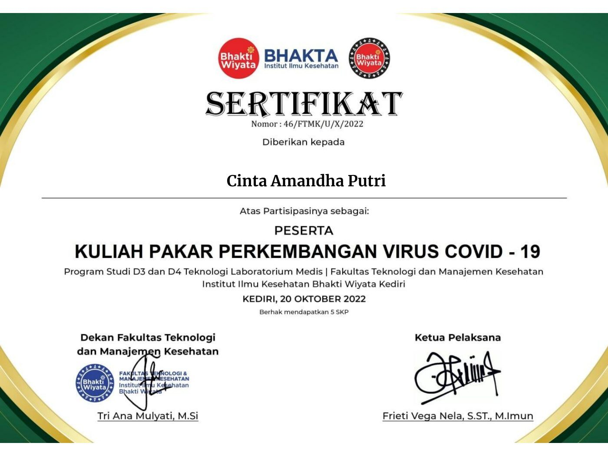
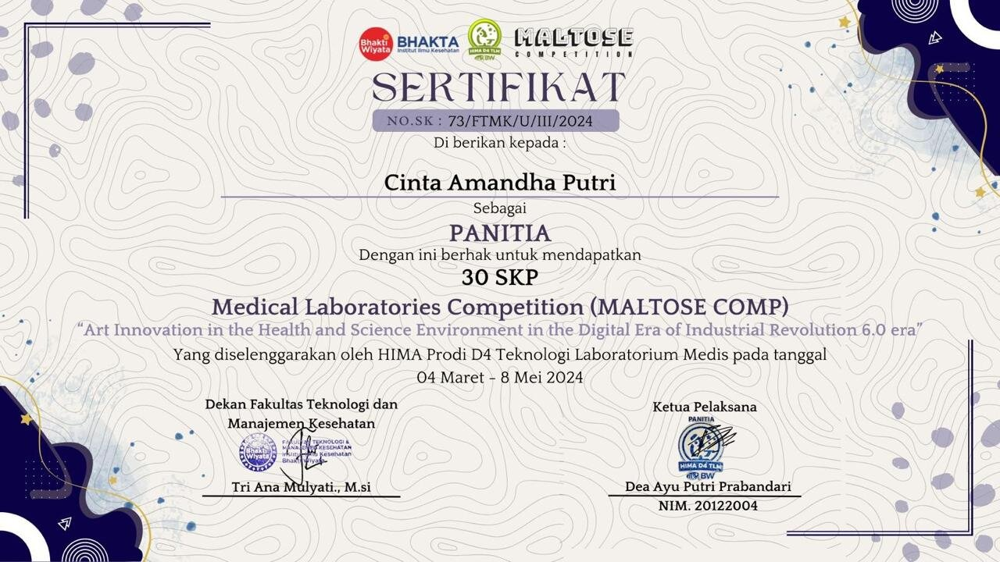
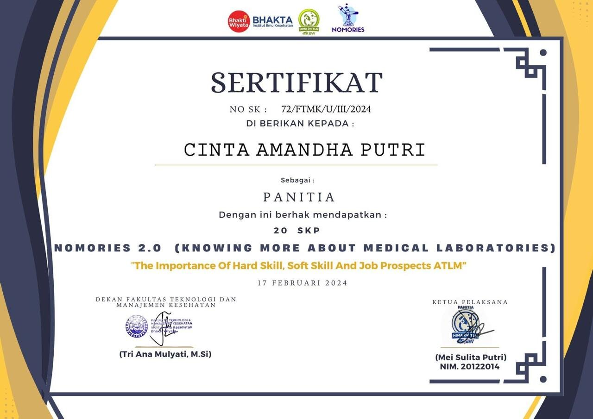
Dokumentasi praktik dan kegiatan selama kuliah.

